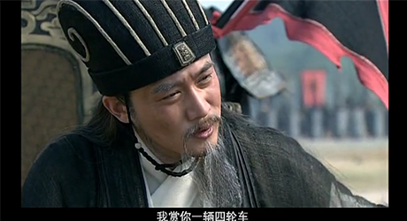

一切的孤单都不需要答案
一想，2016年了，已经没有了18岁青涩明媚的光阴，从小一直读书到离开校园走进社会，这一过程好像使人一下子便失去了少年时光。来到一个金钱驱动着人们前进的社会。 我好像有一种措手不及地反应不过来的错觉。是认为自己还很年轻吗？不是，只是觉得连自己想做什么都会很迷惘，一直含糊不定。
在农村里长大的孩子，到这个年经，似乎就一定要找个伴侣，成家过日子，那样才正常。这或许是一些落后农村风俗尘旧的观念引起的吧。可我还觉得，一切的孤单都不需 要答案，一个人静看城市里喧哗繁杂，去慢慢体会思考人生。>_< >_<
很多时候，戓许我们觉得迷惘只是没有方向感罢了
记得曾经看过一句话，一定要有自己的方向感，在这个时代没有方向感是累得要命的，不管起点有多低，都要坦然接受。这句话印证了这段时间以来的
种种经历。真的，没有方向感让人很累，特别是在这个浮燥的社会，要有个明确的目标方向并努力前行。但选择的方向努力还重要，方向不对，
再努力都是徒然。因为方向不对，你努力走下去的每一步都是错的。个人觉得这是真理，所以真的选择比努力重要。所以简单总结：
1、要围绕自己的兴爱好选择职业。
2、做自己最擅长的事。
3、从最容易实现的目标要始做起。
再过2个多月，又告别2016了
有一种处于水深火热之中的感觉，成长到了一定的年纪，该要承担的却没有能力承担，有一种很强的挫败感。不过还是那句，不管起点有多低，都要坦然接 受。不放弃、便是最好方法。千言万语尽在无法诉说中，其实很想把一些经历诉说成一个故事，无奈我文彩不够。记忆中好久没有写过多几段怀旧的情感语录了， 以前很喜欢写，并写在一个黑暗的网络日志里，无人知道自己承受过什么，就这样一直记录高中那段黑暗的时光，一翻出来都说老了。其实说那么多，都好像 是自己一个人在想罢了，没有人会在意你的喜怒哀乐，请记住，你一不是唯一一个有过去的人。
